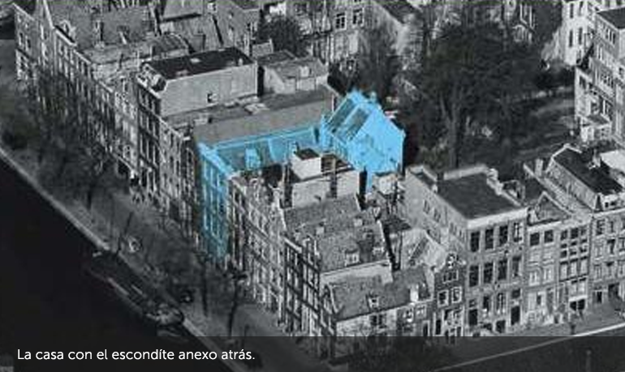
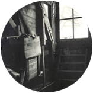

Ana Frank nació en Frankfurt, Alemania, el 12 de junio de 1929. Su familia estaba compuesta por su madre Edith, su padre Otto, y su hermana mayor, Margot. Otto Frank fue un empresario y aficionado a la fotografía que, en 1933, tras el ascenso del nazismo al poder, trasladó a su familia a Amsterdam, Holanda.
Allí Margot y Ana crecieron y se educaron en la escuela pública.
Tenían muchas amigas con las que compartían juegos y paseos.
El 10 de mayo de 1940 Alemania invadió Holanda.
Los derechos de los judíos fueron paulatinamente limitados.
La comunidad judía sufrió un aislamiento total.
El Diario
El 12 de junio de 1942, Ana cumplía 13 años y recibía de regalo un Diario al que llamó
Kitty y al cual confiaría todos sus secretos.
Sábado, 20 de junio de 1942.
(...)
“Despuús de 1940, nuestra buena época iba a terminar rápidamente: ante todo la guerra, la capitulación, y la invasión de los alemanes llevándonos a la miseria. Disposición tras disposición contra los judíos. Los judíos obligados a llevar la estrella, a ceder sus bicicletas...
Así seguíamos tirando, sin hacer esto, sin hacer aquello, Jopie me dice siempre: “No me atrevo a hacer nada, de miedo a que esté prohibido”. Nuestra libertad, pues, está muy restringida: con todo, la vida es aún soportable.”

Desde julio de 1942 comenzaron a partir trenes hacia el Este cargados de judíos.
Margot recibió la orden de presentarse el 5 de julio de 1942 y al día siguiente la familia Frank se mudó al escondite que había preparado, donde permanecieron escondidos junto a otros 4 judíos durante 25 meses.
La entrada al anexo estaba cubierta por la biblioteca

El ático desde donde se podía observar el cielo
Miércoles, 03 de mayo de 1944.
(...)
“a, el desayuno sólo consta de una taza de avena... para el almuerzo tuvimos ensalada cocida podrida. Ensalada cruda o cocida, espinacas..., ese es nuestro menú, no hay otra cosa, salvo las papas podridas: ¡un artificio delicioso!”
Sábado,27 de mayo de 1944.
(...)
“Más de una vez me pregunto si, para todos nosotros, no habría valido más no ocultarnos y estar muertos a la hora presente, antes de pasar por todas estas calamidades, sobre todo por nuestros protectores, que, al menos, no estarían en peligro...
...Que llegue el fin, aunque sea duro; al menos no sabremos si, a fin de cuentas, debemos vencer o perecer.
Tuya”
“...
Que llegue el fin, aunque sea duro; al menos no sabremos si, a fin de cuentas, debemos vencer o perecer.”